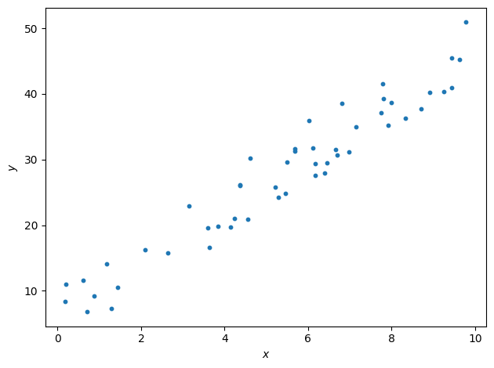
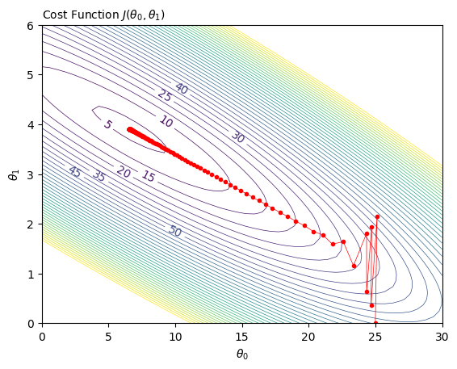

Plotting Linear Regression
Contents
:orphan:
Plotting Linear Regression#
Simple case with only \(\theta_1\)
from myst_nb import glue
import numpy as np
import pandas as pd
import scipy.optimize
import matplotlib.pyplot as plt
from itertools import chain
For illustration: 3D ‘bowl’#
Source: https://www.alphacodingskills.com/matplotlib/matplotlib-3d-contour-plot.php
plt.rcParams.update(plt.rcParamsDefault)
#params = {
# 'xtick.labelsize':'small',
# 'ytick.labelsize':'small',
# 'axes.labelsize': 'medium'}
#plt.rcParams.update(params)
xlist = np.linspace(-5.0, 5.0, 100)
ylist = np.linspace(-5.0, 5.0, 100)
X, Y = np.meshgrid(xlist, ylist)
#creating elliptical plane
Z = (X**2)/4 + (Y**2)/9
fig = plt.figure()
ax = fig.add_subplot(111, projection='3d')
#drawing contour plot
surf = ax.plot_surface(X,Y,Z, cmap='viridis_r', linewidth=0.3, alpha = 0.5, edgecolor = 'k')
#ax.set_title('3D Contour Plot')
ax.set_xlabel('$\\theta_0$')
ax.set_ylabel('$\\theta_1$')
ax.set_zlabel('$J(\\theta_0, \\theta_1)$', rotation='90')
#plt.title('Cost Function $J(\\theta_0, \\theta_1)$', loc='left', fontsize = 15)
ax.azim = 225
ax.xaxis.set_rotate_label(False); ax.xaxis.set_pane_color((1.0, 1.0, 1.0, 0.0))
ax.yaxis.set_rotate_label(False); ax.yaxis.set_pane_color((1.0, 1.0, 1.0, 0.0))
ax.zaxis.set_rotate_label(False); ax.zaxis.set_pane_color((1.0, 1.0, 1.0, 0.0))
glue("plot_linReg_bowl", fig, display=False)
---------------------------------------------------------------------------
ValueError Traceback (most recent call last)
Input In [2], in <cell line: 25>()
23 ax.set_xlabel('$\\theta_0$')
24 ax.set_ylabel('$\\theta_1$')
---> 25 ax.set_zlabel('$J(\\theta_0, \\theta_1)$', rotation='90')
26 #plt.title('Cost Function $J(\\theta_0, \\theta_1)$', loc='left', fontsize = 15)
27 ax.azim = 225
File ~/Library/Python/3.9/lib/python/site-packages/mpl_toolkits/mplot3d/axes3d.py:1135, in Axes3D.set_zlabel(self, zlabel, fontdict, labelpad, **kwargs)
1133 if labelpad is not None:
1134 self.zaxis.labelpad = labelpad
-> 1135 return self.zaxis.set_label_text(zlabel, fontdict, **kwargs)
File ~/Library/Python/3.9/lib/python/site-packages/matplotlib/axis.py:1722, in Axis.set_label_text(self, label, fontdict, **kwargs)
1720 if fontdict is not None:
1721 self.label.update(fontdict)
-> 1722 self.label.update(kwargs)
1723 self.stale = True
1724 return self.label
File ~/Library/Python/3.9/lib/python/site-packages/matplotlib/text.py:198, in Text.update(self, kwargs)
196 # Update bbox last, as it depends on font properties.
197 bbox = kwargs.pop("bbox", sentinel)
--> 198 super().update(kwargs)
199 if bbox is not sentinel:
200 self.set_bbox(bbox)
File ~/Library/Python/3.9/lib/python/site-packages/matplotlib/artist.py:1176, in Artist.update(self, props)
1168 def update(self, props):
1169 """
1170 Update this artist's properties from the dict *props*.
1171
(...)
1174 props : dict
1175 """
-> 1176 return self._update_props(
1177 props, "{cls.__name__!r} object has no property {prop_name!r}")
File ~/Library/Python/3.9/lib/python/site-packages/matplotlib/artist.py:1162, in Artist._update_props(self, props, errfmt)
1159 if not callable(func):
1160 raise AttributeError(
1161 errfmt.format(cls=type(self), prop_name=k))
-> 1162 ret.append(func(v))
1163 if ret:
1164 self.pchanged()
File ~/Library/Python/3.9/lib/python/site-packages/matplotlib/text.py:1196, in Text.set_rotation(self, s)
1194 self._rotation = 90.
1195 else:
-> 1196 raise ValueError("rotation must be 'vertical', 'horizontal' or "
1197 f"a number, not {s}")
1198 self.stale = True
ValueError: rotation must be 'vertical', 'horizontal' or a number, not 90
plt.rcParams.update(plt.rcParamsDefault)
#levs = range(0,10,0.5) #chain(range(0,50,5), range(50,200, 10))
fig, ax = plt.subplots()
CS = ax.contour(X,Y,Z, linewidths=0.5)
ax.clabel(CS, CS.levels[0:10], inline=1, fontsize=10, fmt='%.2f')
ax.set_xlabel('$\\theta_0$')
ax.set_ylabel('$\\theta_1$')
plt.title('Cost Function $J(\\theta_0, \\theta_1)$', loc='left', fontsize = 10)
glue("plot_linReg_bowl_contour", fig, display=False)

Cost function by hand with 4 points#
plt.rcParams.update(plt.rcParamsDefault)
fig, ax = plt.subplots()
x = [1, 2, 3, 4]
y = [2, 4, 6, 8]
# Draw a grid:
ax.set_axisbelow(True)
ax.grid(True, which='both', color='lightgrey', linestyle='--', linewidth=0.5)
ax.set_xlim([0, 5])
ax.set_ylim([0, 10])
ax.scatter(x, y, s=20)
ax.set_xlabel('$x$')
ax.set_ylabel('$y$')
plt.tight_layout()
glue("plot_linReg_1234", fig, display=False)
def h_lin(theta_0, theta_1, x):
return theta_0 + theta_1 * x
def costFunctionLinRegression( x_vals, y_vals, theta_0, theta_1): # x and y are lists
m = len(x_vals)
if m != len(y_vals):
raise ValueError('The lists of x and y values are not the same length!')
sum_error_squared = 0
for x , y in zip(x_vals, y_vals):
sum_error_squared += ( h_lin(theta_0, theta_1, x) - y )**2
return (1/(2*m)) * sum_error_squared
theta_0 = 0
print("The x values:")
print(x)
print("The y values:")
print(y)
theta_1_vals = [0, 0.5, 1, 1.5, 2, 2.5, 3, 3.5]
costs = []
for theta_1 in theta_1_vals:
cost = costFunctionLinRegression( x, y, theta_0, theta_1)
print("With theta 1 = %.1f\tcost = %.2f" %(theta_1, cost))
costs.append(cost)
print(costs)
The x values:
[1, 2, 3, 4]
The y values:
[2, 4, 6, 8]
With theta = 0.0 cost = 15.00
With theta = 0.5 cost = 8.44
With theta = 1.0 cost = 3.75
With theta = 1.5 cost = 0.94
With theta = 2.0 cost = 0.00
With theta = 2.5 cost = 0.94
With theta = 3.0 cost = 3.75
With theta = 3.5 cost = 8.44
[15.0, 8.4375, 3.75, 0.9375, 0.0, 0.9375, 3.75, 8.4375]
Plotting now the cost function w.r.t. parameter theta 1:
plt.rcParams.update(plt.rcParamsDefault)
fig, ax = plt.subplots()
ax.scatter(theta_1_vals, costs, c='orange', s=20)
ax.set_xlabel('$\\theta_1$')
ax.set_ylabel('Cost Function $J(\\theta_1)$')
plt.tight_layout()
glue("plot_linReg_costvstheta1", fig, display=False)
The data example#
Generating points#
np.random.seed(0)
x = 10*np.random.rand(50)
y = 2 + 4 * x + 10*np.random.rand(50)
fig, ax = plt.subplots()
ax.scatter(x, y, s=10)
ax.set_xlabel('$x$')
ax.set_ylabel('$y$')
plt.tight_layout()
glue("plot_linReg_50pts", fig, display=False)

Saving the data to csv (for tutorial)#
outputfilename = "../data/tutorial_1.csv"
zipped = list(zip(x, y))
df = pd.DataFrame(zipped, columns=['x', 'y'])
outputfilename = "../data/tutorial_1.csv"
df.to_csv(outputfilename, index=False)
def residuals_func(v, x, y):
return y - (v[1]*x+v[0])
res = scipy.optimize.least_squares(residuals_func, x0=[0, 0], args=(x,y))
print(f"best-fit line: {res.x[1]:.3f}*x + {res.x[0]:.3f}")
best-fit line: 3.906*x + 6.581
SciPy optimizer (least squares) best-fit line: 3.906 X + 6.581
def get_residuals(Theta, x, y):
return ( Theta[1]*x + Theta[0] ) - y
Linear Regression ‘by hand’#
# 0. Hyperparameters
alpha = 0.05
N = 1000
# Other parameters:
m = len(x) # sample size
if m != len(y): raise ValueError('The lists of x and y values are not the same length!')
# 1. Initialization
theta_0 = 25 ; glue("theta_0_start", theta_0)
theta_1 = 0 ; glue("theta_1_start", theta_1)
# Store theta (weights) values for Gradient Descent (GD) visualizations
weights_GD_0 = np.array([theta_0])
weights_GD_1 = np.array([theta_1])
print("Starting gradient descent\n")
# 2. Iteration
for n in range(1,N+1):
# 2.1. Derivatives: of the form ( h(theta) - y )
Theta = [theta_0, theta_1]
residuals = get_residuals(Theta, x, y)
sum_residuals = sum(residuals)
sum_residuals_x = sum(residuals * x)
# 2.2. Calculate new parameters:
theta_0_new = theta_0 - alpha * (1/m) * sum_residuals
theta_1_new = theta_1 - alpha * (1/m) * sum_residuals_x
# Store thetas (for plotting purposes)
weights_GD_0 = np.append(weights_GD_0, theta_0_new)
weights_GD_1 = np.append(weights_GD_1, theta_1_new)
# Printing every 10 iterations
if (n<100 and n % 10 == 0) or (n>100 and n % 100 == 0):
cost = costFunctionLinRegression( x, y, theta_0_new, theta_1_new)
spacer = "" if theta_0_new > 10 else " "
print("Iteration %d\t\ttheta_0 = %s%.3f\tDiff = %.4f\t\ttheta_1 = %.3f\t\tDiff = %.4f\t\tCost = %.4f" %(n, spacer, theta_0_new, theta_0_new-theta_0, theta_1_new, theta_1_new-theta_1 , cost))
# 2.3. Update the parameters for next iteration
theta_0 = theta_0_new
theta_1 = theta_1_new
# Is the exit condition met?
if abs(sum_residuals) < 0.001 and abs(sum_residuals_x) < 0.001:
print("\n ! The derivatives are zero! Exiting gradient descent.")
break
print("\nEnd of gradient descent after %d iterations" % n)
glue("theta_0_opt", theta_0)
glue("theta_1_opt", theta_1)
25
0
Starting gradient descent
Iteration 10 theta_0 = 23.360 Diff = -0.2486 theta_1 = 1.158 Diff = -0.5069 Cost = 34.1274
Iteration 20 theta_0 = 21.784 Diff = -0.1703 theta_1 = 1.590 Diff = -0.0918 Cost = 27.7958
Iteration 30 theta_0 = 20.339 Diff = -0.1423 theta_1 = 1.847 Diff = -0.0041 Cost = 23.4581
Iteration 40 theta_0 = 19.028 Diff = -0.1262 theta_1 = 2.052 Diff = 0.0133 Cost = 19.9476
Iteration 50 theta_0 = 17.841 Diff = -0.1136 theta_1 = 2.230 Diff = 0.0157 Cost = 17.0769
Iteration 60 theta_0 = 16.767 Diff = -0.1027 theta_1 = 2.390 Diff = 0.0150 Cost = 14.7278
Iteration 70 theta_0 = 15.795 Diff = -0.0929 theta_1 = 2.535 Diff = 0.0138 Cost = 12.8055
Iteration 80 theta_0 = 14.916 Diff = -0.0840 theta_1 = 2.666 Diff = 0.0125 Cost = 11.2325
Iteration 90 theta_0 = 14.121 Diff = -0.0760 theta_1 = 2.784 Diff = 0.0113 Cost = 9.9453
Iteration 200 theta_0 = 9.083 Diff = -0.0252 theta_1 = 3.534 Diff = 0.0038 Cost = 4.7867
Iteration 300 theta_0 = 7.499 Diff = -0.0093 theta_1 = 3.770 Diff = 0.0014 Cost = 4.2340
Iteration 400 theta_0 = 6.917 Diff = -0.0034 theta_1 = 3.856 Diff = 0.0005 Cost = 4.1596
Iteration 500 theta_0 = 6.704 Diff = -0.0012 theta_1 = 3.888 Diff = 0.0002 Cost = 4.1496
Iteration 600 theta_0 = 6.626 Diff = -0.0005 theta_1 = 3.900 Diff = 0.0001 Cost = 4.1483
Iteration 700 theta_0 = 6.597 Diff = -0.0002 theta_1 = 3.904 Diff = 0.0000 Cost = 4.1481
Iteration 800 theta_0 = 6.587 Diff = -0.0001 theta_1 = 3.905 Diff = 0.0000 Cost = 4.1481
Iteration 900 theta_0 = 6.583 Diff = -0.0000 theta_1 = 3.906 Diff = 0.0000 Cost = 4.1480
Iteration 1000 theta_0 = 6.581 Diff = -0.0000 theta_1 = 3.906 Diff = 0.0000 Cost = 4.1480
End of gradient descent after 1000 iterations
6.58134322580281
3.906136376801785
Straight line#
fig, ax = plt.subplots()
ax.scatter(x, y, s=10)
ax.set_xlabel('$x$')
ax.set_ylabel('$y$')
plt.tight_layout()
# Line
y_lin = theta_0 + theta_1 * x
ax.plot(x, y_lin, '-r', lw=1)
glue("plot_linReg_50pts_line", fig, display=False)
Visualization with 3D plot and contour plot#
# Grid for 2D parameter space:
theta_0_grid = np.linspace(0, 30, 50) # (1, 24, 50)
theta_1_grid = np.linspace(0, 6, 50) # (0, 6, 50)
# Z values of costs for the grid:
Theta0, Theta1 = np.meshgrid(theta_0_grid, theta_1_grid)
Costs = costFunctionLinRegression( x, y, Theta0, Theta1 )
# Gradient descent: 5 first params then every 10 epochs
theta_0_pts = np.concatenate( (weights_GD_0[0:5], weights_GD_0[5::5]), axis=None)
theta_1_pts = np.concatenate( (weights_GD_1[0:5], weights_GD_1[5::5]), axis=None)
# Cost for selected intermediary weights:
Costs_wGD = costFunctionLinRegression( x, y, theta_0_pts, theta_1_pts)
plt.rcParams.update(plt.rcParamsDefault)
fig = plt.figure(figsize=plt.figaspect(0.45)) # 16,4
#==========================
# Contour plot
#==========================
# Tweak levels
plt.rcParams.update(plt.rcParamsDefault)
levs = range(5,200,5)
ax = fig.add_subplot(1, 2, 1)
CS = ax.contour(Theta0, Theta1, Costs, levs, linewidths=0.5)
ax.clabel(CS, CS.levels[0:10], inline=1, fontsize=10, fmt='%d')
ax.plot(theta_0_pts, theta_1_pts, marker=".", c="r", lw=0.5)
ax.set_xlabel('$\\theta_0$')
ax.set_ylabel('$\\theta_1$')
plt.title('Cost Function $J(\\theta_0, \\theta_1)$', loc='left', fontsize = 10)
#==========================
# 3D plot
#==========================
ax = fig.add_subplot(1, 2, 2, projection='3d')
ax.plot(theta_0_pts, theta_1_pts, Costs_wGD, c='r')
surf = ax.plot_surface(Theta0, Theta1, Costs, cmap='viridis_r', linewidth=0.3, alpha = 0.5, edgecolor = 'k')
ax.set_xlabel('$\\theta_0$')
ax.set_ylabel('$\\theta_1$')
ax.set_zlabel('$J(\\theta_0, \\theta_1)$', rotation=90)
ax.azim = 190 # 200
ax.elev = 30 # 30
ax.xaxis.set_rotate_label(False); ax.xaxis.set_pane_color((1.0, 1.0, 1.0, 0.0))
ax.yaxis.set_rotate_label(False); ax.yaxis.set_pane_color((1.0, 1.0, 1.0, 0.0))
ax.zaxis.set_rotate_label(False); ax.zaxis.set_pane_color((1.0, 1.0, 1.0, 0.0))
#plt.title('Cost Function $J(\\theta_0, \\theta_1)$', loc='left', fontsize = 10)
#plt.tight_layout()
glue("plot_linReg_3D", fig, display=False)
#==========================
# 3D plot
#==========================
ax = fig.add_subplot(1, 2, 2, projection='3d')
ax.plot(theta_0_pts, theta_1_pts, Costs_wGD, c='r')
surf = ax.plot_surface(Theta0, Theta1, Costs, cmap='viridis_r', linewidth=0.3, alpha = 0.5, edgecolor = 'k')
ax.set_xlabel('$\\theta_0$')
ax.set_ylabel('$\\theta_1$')
ax.set_zlabel('$J(\\theta_0, \\theta_1)$', rotation=90)
ax.azim = 190 # 200
ax.elev = 30 # 30
ax.xaxis.set_rotate_label(False); ax.xaxis.set_pane_color((1.0, 1.0, 1.0, 0.0))
ax.yaxis.set_rotate_label(False); ax.yaxis.set_pane_color((1.0, 1.0, 1.0, 0.0))
ax.zaxis.set_rotate_label(False); ax.zaxis.set_pane_color((1.0, 1.0, 1.0, 0.0))
#plt.title('Cost Function $J(\\theta_0, \\theta_1)$', loc='left', fontsize = 10)
"\n#==========================\n# 3D plot\n#==========================\nax = fig.add_subplot(1, 2, 2, projection='3d')\n\nax.plot(theta_0_pts, theta_1_pts, Costs_wGD, c='r')\nsurf = ax.plot_surface(Theta0, Theta1, Costs, cmap='viridis_r', linewidth=0.3, alpha = 0.5, edgecolor = 'k')\n\nax.set_xlabel('$\\theta_0$')\nax.set_ylabel('$\\theta_1$')\nax.set_zlabel('$J(\\theta_0, \\theta_1)$', rotation=90)\nax.azim = 190 # 200\nax.elev = 30 # 30\nax.xaxis.set_rotate_label(False); ax.xaxis.set_pane_color((1.0, 1.0, 1.0, 0.0))\nax.yaxis.set_rotate_label(False); ax.yaxis.set_pane_color((1.0, 1.0, 1.0, 0.0))\nax.zaxis.set_rotate_label(False); ax.zaxis.set_pane_color((1.0, 1.0, 1.0, 0.0))\n#plt.title('Cost Function $J(\\theta_0, \\theta_1)$', loc='left', fontsize = 10)\n"
#==========================
# Contour plot
#==========================
plt.rcParams.update(plt.rcParamsDefault)
levs = range(5,200,5) #chain(range(0,50,5), range(50,200, 10))
fig, ax = plt.subplots()
CS = ax.contour(Theta0, Theta1, Costs, levs, linewidths=0.5)
ax.clabel(CS, CS.levels[0:10], inline=1, fontsize=10, fmt='%d')
ax.plot(theta_0_pts, theta_1_pts, marker=".", c="r", lw=0.5)
ax.set_xlabel('$\\theta_0$')
ax.set_ylabel('$\\theta_1$')
plt.title('Cost Function $J(\\theta_0, \\theta_1)$', loc='left', fontsize = 10)
#glue("plot_linReg_contour2D", fig, display=False)
